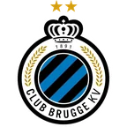
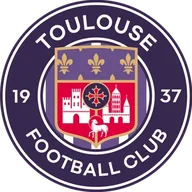

Ланс — Марсель итог матча 8 ноября
Статистика матча
- 13Удары16
- 6Удары в створ5
- 41 %Владение мячом59 %
- 4Угловые6
Данные ESPN.
- ТурнирЛига 1
Коротко о матче
- Итог: Ланс — Марсель 1:2.
- Расчёт модели до матча не сохранился.
- Перед матчем серия — Марсель: 3 победы подряд.
- Пропущено за игру в последних 5 перед матчем — Ланс: 3,0.
- Последняя очная встреча — 24.01.2026: Марсель — Ланс 3:1.
Форма: последние матчи
 Ланс 2 победы из 5
Ланс 2 победы из 5
 В3:1
В3:1
П0:3 В2:1
В2:1 П0:1
П0:1 П1:9
П1:9
 Марсель 4 победы из 5
Марсель 4 победы из 5
 В5:2
В5:2 П0:1
П0:1 В4:3
В4:3
В2:0 В1:0
В1:0
Личные встречи
- Марсель3:1Ланс
- Ланс2:1Марсель
Положение в таблице
| Команда | Место | И | В | Н | П | Голы | Очки |
|---|---|---|---|---|---|---|---|
| 11 | 10 | 4 | 1 | 5 | 17:15 | 13 | |
| 4 | 10 | 6 | 0 | 4 | 22:14 | 18 |
Другие матчи Лиги 1 в этот день
Страница клуба: Ланс · Страница клуба: Марсель · Лига: Лига 1 · Прогноз на сегодня: Лига 1 · Все матчи дня колодой
Материалы носят информационный характер и не гарантируют результат. Реклама букмекеров на сайте не размещается. Сайт только для совершеннолетних (18+).